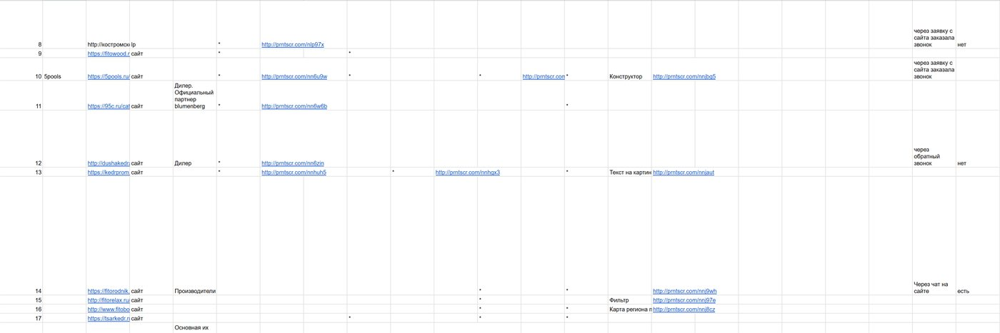
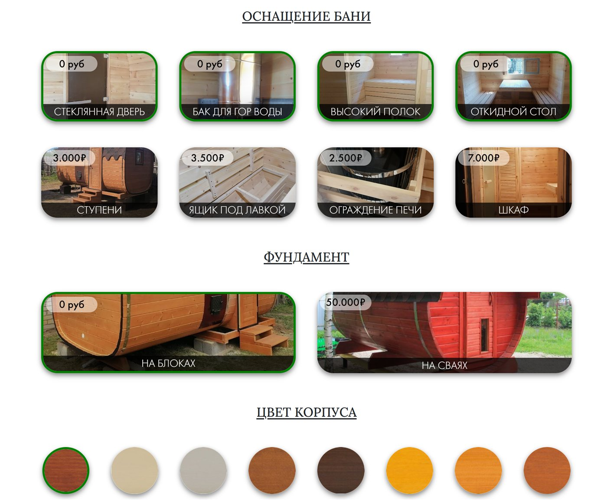
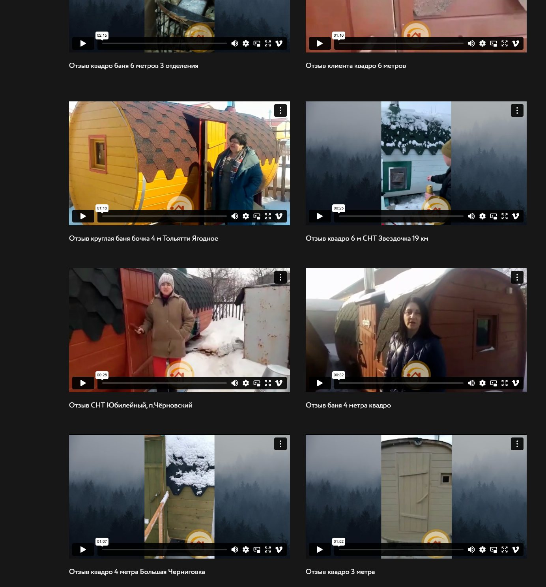

У заказчика — цех по производству и установке бань-бочек в Самаре и области. Качественный материал — алтайский кедр, хорошая репутация и положительные отзывы. Также у клиента был работающий сайт, который приносил заявки, но уже устарел и не обслуживался.
Бани-бочки — товар, который «продаёт глазами». Сухой текст на сайте не передаёт качество сборки. Поэтому ставку сделали на визуал: новый сайт под рекламу, промо-ролик и наглядный расчёт цены.
Шаг 1. Анализ конкурентов: разобрали рынок Самары и соседних регионов
Изучили конкурентов — и местных в Самаре, и крупных игроков, которые везут бани-бочки по ПФО.
| Параметр | Что смотрели |
|---|---|
| Оффер | Цена «от», комплектация, сроки изготовления |
| Приманка | Скидка, доставка в подарок, рассрочка |
| Визуал | Фото/видео реальных бань vs картинки из интернета |
| Расчёт цены | Есть ли калькулятор / прозрачная цена |
| Скорость ответа | За сколько перезванивают после заявки |
| Скрипт продаж | Как считают смету, что спрашивают, как дожимают |
Прозвонили конкурентов под видом клиента. Выяснили:
- Большинство показывает одинаковые «стоковые» фото — реальное видео своей бригады сразу выделяет на их фоне.
- Цену почти все называют «от» и просят написать в мессенджер — клиент не понимает итог и теряется.
- Сильные игроки дают понятную цену под комплектацию и быстрый расчёт — это и стало нашей точкой роста (калькулятор).

Шаг 2. Новый сайт под рекламу + промо-ролик
Старый сайт-визитка не годился под платный трафик, поэтому собрали отдельный сайт-лендинг под рекламу — с сильным оффером, реальными фото объектов и акцентом на «своё производство». Главный актив — промо-ролик: сняли готовые бани и процесс сборки силами бригады.
| Креатив | CTR в РСЯ | Конверсия |
|---|---|---|
| Статика «баня-бочка от 90 000 ₽» | 0,55% | 3,8% |
| Статика «баня из кедра за 2 дня» | 0,72% | 5,1% |
| Промо-ролик (своё производство) | 1,05% | 7,2% |
| Статика «рассрочка 0%» | 0,63% | 4,5% |
Промо-ролик выиграл с заметным отрывом. Видео живой сборки доказывает, что у клиента своё производство, а не перепродажа — для дорогого товара это решающий аргумент доверия. Ролик стал основным креативом в РСЯ и в VK.
Шаг 3. Калькулятор стоимости на сайте
Чтобы закрыть главную боль ниши — «непонятную цену» — встроили калькулятор бань-бочек. Клиент сам собирает свою баню (длина бочки, комплектация, тип печи и отделки, доставка и монтаж) и сразу видит стоимость. В конце расчёта — заявка с уже понятной ценой и составом.
| Посадочная | Конверсия в заявку |
|---|---|
| Сайт до калькулятора | ~2% |
| Сайт с калькулятором | ~6% |
Это подняло конверсию и качество лидов: менеджер общается с человеком, который уже видел цену и готов к ней.

Шаг 4. Запуск рекламы: Директ + VK
Бюджет 100 000 ₽/мес распределили между двумя каналами и вели трафик на лендинг и калькулятор.
| Канал | CTR | Стоимость заявки | Заявок за 6 мес |
|---|---|---|---|
| Яндекс Директ (Поиск + РСЯ) | Поиск ~9% / РСЯ 1,05% | ~500 ₽ | ~660 |
| VK Реклама (промо-ролик) | 0,8% | ~350 ₽ | ~770 |
| Итого | — | средняя ~420 ₽ | более 1 400 |
VK дал заявку дешевле за счёт холодного спроса и сильного видео, Директ — более «горячий» трафик от людей, которые уже ищут баню-бочку. Вместе каналы дали стабильный поток ~230 заявок в месяц при бюджете 100 000 ₽.
Шаг 5. Обучили клиента вести рекламу самостоятельно
Через полгода клиент захотел вести Яндекс Директ сам — чтобы держать рекламу под рукой и глубже разбираться в своём маркетинге. Есть агентства, которые в такой момент держат клиента «на крючке»: прячут доступы, не отдают кампании. Это не наш стиль — система уже была собрана и приносила прибыль, мы спокойно передали её клиенту.
- Обучили основам ведения Директа: структура кампаний, ставки, минус-слова, чтение статистики.
- Передали рабочие кампании и регламент — что и когда проверять, на что смотреть.
- Договорились о поддержке советом — подключаемся и консультируем, когда нужна помощь.
Бонус: рекомендации клиенту по контенту
- Видео сборки и обзоры готовых бань — то, что выстрелило в рекламе, так же работает в органике.
- «Распаковка» доставки и установки — короткие ролики, как баню привозят и ставят за день.
- Отзывы клиентов на объекте — живые эмоции после первой топки.
- VK-сообщество и Telegram-канал — копить аудиторию и прогревать к сезону (весна–осень — пик спроса).
